<div class="initial-content">
  <div id="main" role="main">

  <article class="page has-sidebar" itemscope itemtype="https://schema.org/CreativeWork">
    <meta itemprop="headline" content="Getting Started with MySQL HeatWave on AWS">
    
    <meta itemprop="datePublished" content="2022-06-16T17:00:00+00:00">
    


    <header>
      <h1 id="page-title" class="page__title" itemprop="headline">Getting Started with MySQL HeatWave on AWS
</h1>
      


    </header>

    <section class="page__content" itemprop="text">
      

        <p>We live in a multi-cloud world, and that’s why MySQL HeatWave for Amazon Web Service makes so much sense if you need a massively parallel, high performance, in-memory query accelerator for the MySQL Database Service. A combination that accelerates MySQL performance by orders of magnitude for combined analytics and transactional workloads (OLAP and OLTP). The MySQL Database Service is built on MySQL Enterprise Edition, which allows developers to quickly create and deploy secure cloud native applications using the world’s most popular open source database.</p>

<p>Oracle designed this so developers can focus on the important things, like managing data, creating schemas, and providing highly-available applications. MySQL HeatWave for Amazon Web Services (AWS) is a fully managed service, developed and supported by the MySQL team in Oracle. Oracle automates tasks such as backup, recovery, and database and operating system patching. “Worry less, crunch more,” as we say!</p>

<p>If you’ve never heard of HeatWave, think of it as a database query accelerator with boost buttons. As in The Fast and the Furious, when you want to pull ahead of the competition, you hit the NO2 and get the speed you need, right when you need it. And of course, this efficiency means it’s a little less expensive to run those big queries. One of the incredible things about Oracle MySQL HeatWave is the ability to <a href="https://www.oracle.com/mysql/heatwave/">run analytics</a> directly against your existing transactional data, so there’s no need to shuffle that data off to a separate system when you need to perform massively parallel analysis.</p>

<p>To get started, we’ll create a compartment and install MySQL Shell due to its extended capabilities over vanilla MySQL and create a small database so we can eventually connect it to HeatWave for analysis. Note that this is working within Oracle Cloud, but we’ll cover AWS setup in another tutorial to show you how you can leverage HeatWave in a multi-cloud scenario. What a time to be alive!</p>

<p>Let’s look at how to get started. If you’re already developing in Oracle Cloud (OCI), you’ll find it’s relatively easy to get going, as HeatWave on AWS is integrated with OCI’s Identity and Access Management system. When you sign up for HeatWave on AWS, you’ll be directed to the OCI login page where you must sign in with an OCI Cloud Account. After signing in, you’ll be directed to the OCI Console to complete the MySQL HeatWave on AWS sign-up process. When signing into the HeatWave Console, you are directed to OCI for authentication and then back to the HeatWave Console. To keep things simple, billing is still managed and monitored in OCI.</p>

<p>Since we’re just getting started, let’s begin truly at the beginning and create a compute instance with the proper access rules and see how to create a HeatWave cluster in OCI. If you’re already using AWS, we’ll cover that in a separate tutorial.</p>

<h2 id="prerequisites">PREREQUISITES</h2>

<ul>
  <li>An OCI account and Oracle Cloud Account name</li>
  <li>Admin access</li>
  <li>A compatible browser (Chrome 69+, Safari 12.1+, or Firefox 62+ or any browser that is Oracle Jet-approved)</li>
</ul>

<h2 id="overview">OVERVIEW</h2>

<p>MySQL HeatWave on AWS uses predefined Oracle Identity Cloud Service (IDCS) groups and policies to control user access to MySQL HeatWave on AWS and the type of access. You should have the ability to create and modify policies, users, and the like. Also, we are assuming you’re creating the database and administering it, or at least getting the prep work done. Look at you, a one-stop shop!</p>

<ol>
  <li>Create a Compartment</li>
  <li>Create a a VCN and configure for database access</li>
  <li>Create users and groups (if you haven’t already)</li>
  <li>Create a Bastion Host compute instance</li>
  <li>Connect and Install MySQL Shell</li>
  <li>Create a MySQL database</li>
  <li>Create a DB System with HeatWave-compatible shape</li>
  <li>Activate HeatWave on AWS</li>
</ol>

<p>Wondering why this is a “bastion host”? You can read more about bastions in this <a href="https://www.oracle.com/security/cloud-security/bastion/">article</a>.</p>

<blockquote class="notice">
  <p><strong>NOTE</strong>: Once you’re connecting databases and analytics, there’s a better production method for connecting, and that’s creating a Private Access Channel (OAC), which you can learn all about in the article, <a href="https://blogs.oracle.com/analytics/post/how-to-create-oac-instances-on-oci-native-using-multiple-stripes-or-instances-of-idcs">How to create OAC instances on OCI Native using multiple stripes or instances of IDCS</a></p>
</blockquote>

<p>In our example, we’re using a quick and dirty approach to set things up to use HeatWave.</p>

<p>Now let’s get started with the basics! We begin by slicing off a piece of the cloud as our own little homestead. There are a couple of ways to do this, but one of the simplest is to create a Compartment (you could also start with a Compute instance). This is a “place for your stuff” within your tenancy and is quite flexible. As you might imagine, we need to create a group of users who can administer our system, and Identity and Access Management (IAM) is where you’ll go to configure this for any compartments you create.</p>

<h2 id="create-a-compartment">Create a Compartment</h2>

<picture class="">
                <source srcset="assets/create-compartment-hwaws-devrel0266va.png 1x" />
                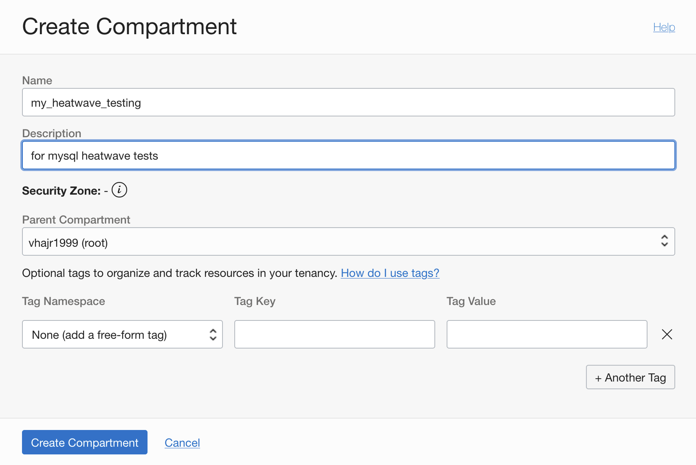
            </picture>

<p><strong>Menu:</strong> Home &gt; Identity &amp; Security &gt; Compartments</p>

<p>I could have set all of this up in my root compartment, but a new compartment is better way to organize things.</p>

<p>Creating compartments is a simple matter, and a necessary starting point to organize and configure your work. I’ve named mine something clever, like <em>my_heatwave_testing</em> so I know what it’s for.</p>

<h2 id="create-a-vcn-and-configure-for-database-access">Create a VCN and configure for database access</h2>

<p><strong>Menu:</strong> Home &gt; Networking &gt; Virtual Cloud Networks</p>

<ol>
  <li>
    <p>Create VCN and subnets using <strong>Virtual Cloud Networks &gt; Start VCN Wizard &gt; Create a VCN with Internet Connectivit</strong>y.</p>

    <picture class="">
             <source srcset="assets/start_a_vcn_wizard-devrel0622va.png 1x" />
             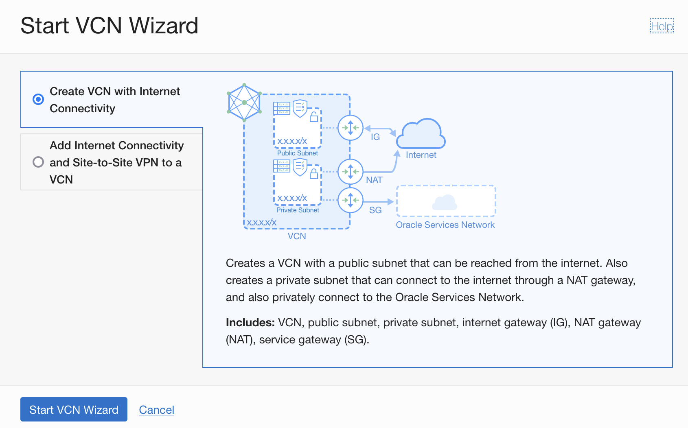
         </picture>

    <p>The handy wizard will walk you through creating a network interface for your system, although there are lots of ways to configure this, let’s not get distracted. Notice that I chose the compartment I set up earlier, my_heatwave_testing – because that’s important!</p>

    <picture class="">
             <source srcset="assets/vcn_config_screen2-devrel0622va.png 1x" />
             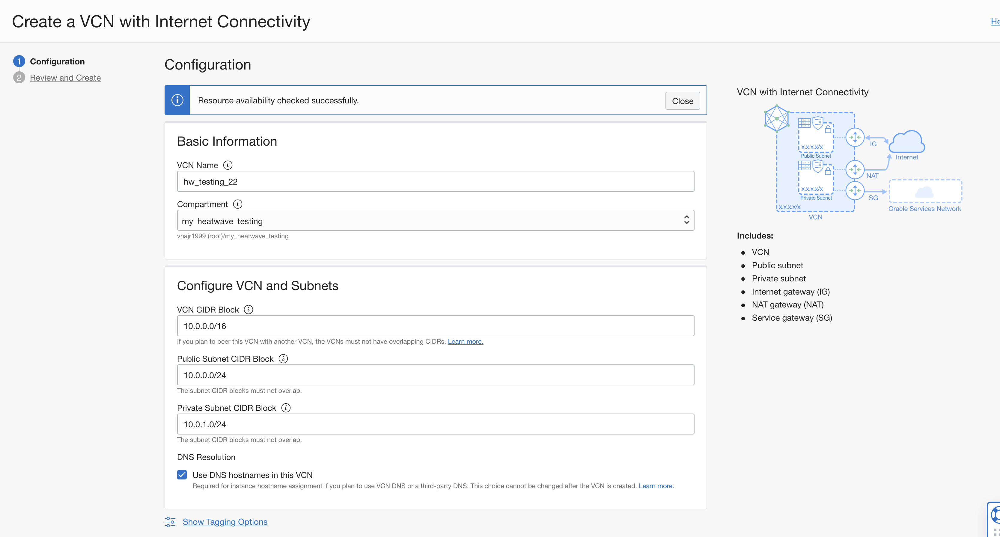
         </picture>
  </li>
  <li>
    <p>Now let’s configure the VCN’s security list to allow traffic through MySQL Database Service ports.<br />
Click on the <strong>Private Subnet</strong> for the VCN you created, then click the <strong>Security List</strong> for it.</p>

    <picture class="">
             <source srcset="assets/vcn_edit_subnet_s1-devrel0622va.png 1x" />
             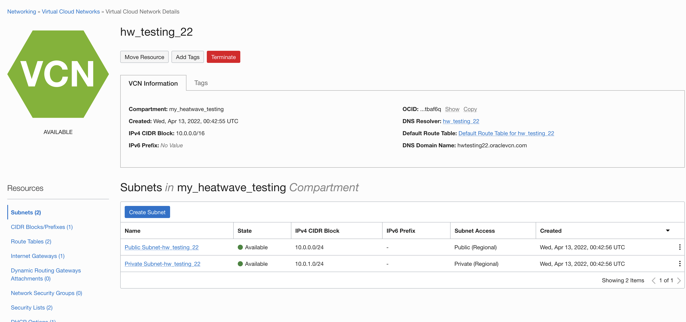
         </picture>
  </li>
  <li>
    <p>Now click <strong>Add Security</strong> list.</p>

    <ol>
      <li>
        <p>We’ll add some ingress rules needed to enable the right ports, <code class="language-plaintext highlighter-rouge">3306</code> and <code class="language-plaintext highlighter-rouge">33060</code>.<br />
Here’s the details:</p>

        <div class="language-console highlighter-rouge"><div class="highlight"><pre class="highlight"><code><span class="go">   Source CIDR: 0.0.0.0/0

   Destination Port Range: 3306,33060

   Description: MySQL Port
</span></code></pre></div>        </div>
      </li>
      <li>
        <p>And click <strong>Add Ingress Rules</strong>.</p>

        <picture class="">
          <source srcset="assets/vcn_ingress_rules_example-devrel0622va.png 1x" />
          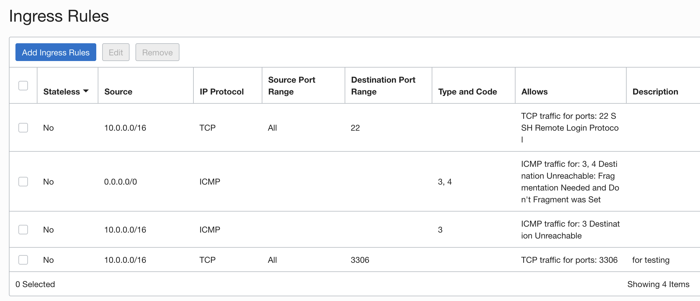
      </picture>

        <p>Looking good so far!</p>
      </li>
    </ol>
  </li>
</ol>

<h2 id="create-users-and-groups-if-you-havent-already">Create users and groups (if you haven’t already)</h2>

<p>We’ll need to set permissions and limit access somewhat, even in our “quick and dirty” example, but you can <a href="https://docs.oracle.com/en-us/iaas/Content/Identity/Tasks/managinggroups.htm">read all about managing groups here</a>. Usually we’ll create a group, create policies, then add users to the group.</p>

<p>Let’s make friends with the <strong>Identity and Security</strong> options.</p>

<ol>
  <li>
    <p>Create a group for your users.<br />
In my example I’ve created a group called database_user (just to be confusing, as I should have named it database_admins, but this was just a clever ploy to keep you on your toes).</p>
  </li>
  <li>
    <p>Add users to the group.<br />
In our example, we’ll add ourselves to this group that will administer our compute instance running MySQL-shell.</p>

    <p>Of course, for a group you’ll first create all the users you need, add those into the group needing access at the levels you determine, and rest assured that you can set them loose with appropriate access controls.</p>
  </li>
  <li>
    <p>We allow access by setting policies, allowing one group to have full access (admins), and a group with limited access (database users, for example).</p>

    <p>For MySQL HeatWave on AWS, there are some specific policy statements we can use, detailed in the charts below.</p>

    <picture class="">
             <source srcset="assets/hw_policy_aws_statements-devrel0622va.png 1x" />
             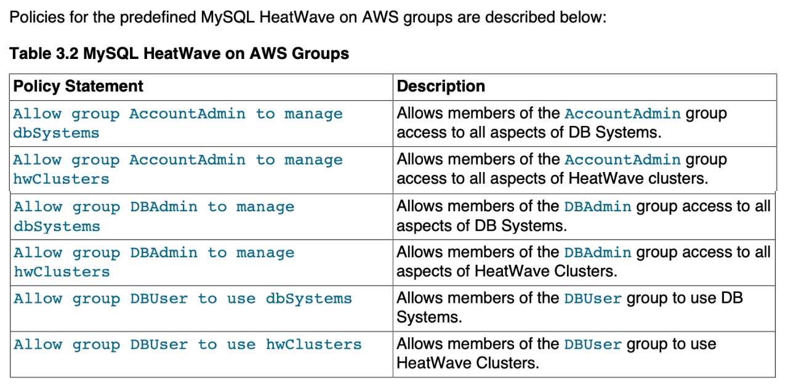
         </picture>

    <p>This is just making it possible to configure and administrate our compartment, and defines the scope of the access applied to the database instance.</p>
  </li>
</ol>

<p>For more on adding users and setting policies in OCI, refer to <a href="https://docs.oracle.com/en-us/iaas/Content/GSG/Tasks/addingusers.htm#Add">this documentation</a>.</p>

<h2 id="create-a-bastion-host-compute-instance">Create a Bastion Host Compute Instance</h2>

<p><strong>MENU:</strong> Main &gt; Compute &gt; Instances</p>

<p>Be sure to select the compartment you set up earlier, under <strong>List Scope</strong>.</p>

<picture class="">
                <source srcset="assets/compute_hw_listscope_compartment-devrel0622va.png 1x" />
                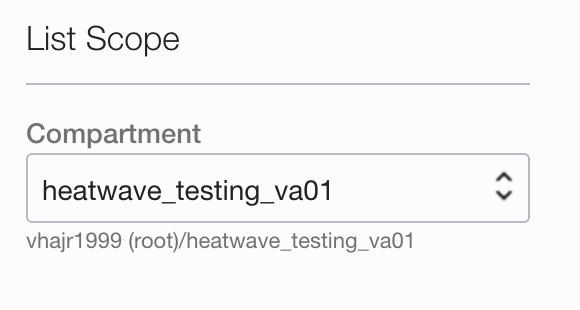
            </picture>

<picture class="">
                <source srcset="assets/create_instance_hw_devrel_0522-0622va.png 1x" />
                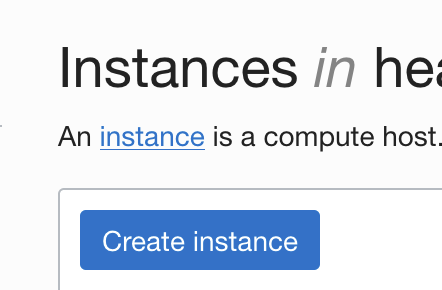
            </picture>

<h3 id="create-instance">Create Instance</h3>

<p>Click <strong>Create Instance</strong> (easy, right?)</p>

<p>Name it something useful, and right now we’ll leave the Availability Domain, Fault Domain, Image, and Shape as-is. You can use a free-tier compute!</p>

<p>We’re going to use Oracle Linux, but one of the niceties here are the choices of compute shapes and Linux distributions to choose from. There’s even a developer distro, which comes pre-configured with key frameworks. For our purposes, we’ll want to make sure it’s set up to work with HeatWave. Plus, we’ll use a Bastion Host for better security. Bastions provide “restricted and time-limited access to target resources that don’t have public endpoints,” and you can <a href="https://docs.oracle.com/en-us/iaas/Content/Bastion/Concepts/bastionoverview.htm">read all about them in this overview article</a>.</p>

<picture class="">
                <source srcset="assets/create_compute_hw_devrel0522aa.png 1x" />
                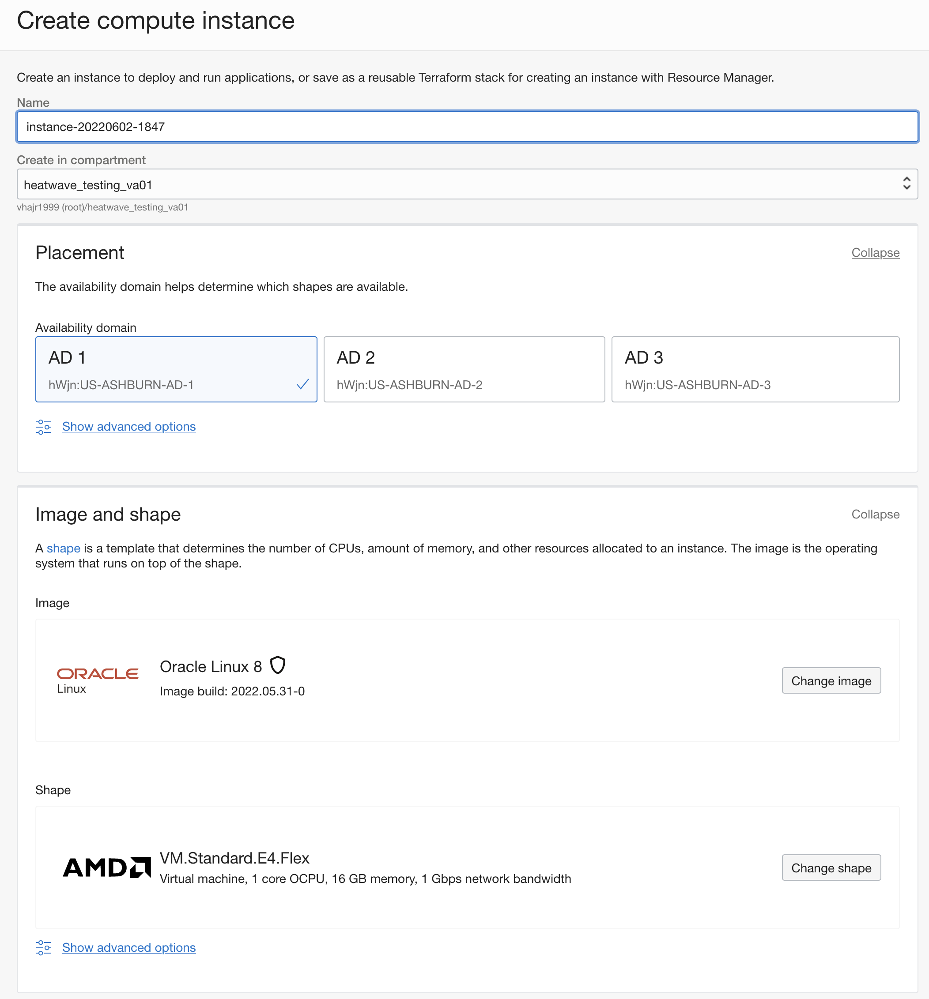
            </picture>

<h4 id="launching-a-linux-instance">Launching a Linux instance</h4>

<p>If you want to know more, <a href="https://docs.oracle.com/en-us/iaas/Content/Compute/Tasks/launchinginstance.htm">here’s a tutorial on launching a Linux instance</a>, but I’ll walk you through the basics now. Bear in mind that our compute instance can be pretty minimal, and there are free tier shapes that could work (<a href="https://www.oracle.com/cloud/free/">our always-free tier VM</a> is quite generous).</p>

<picture class="">
                <source srcset="assets/compute_network_hw_devrel0522aa.png 1x" />
                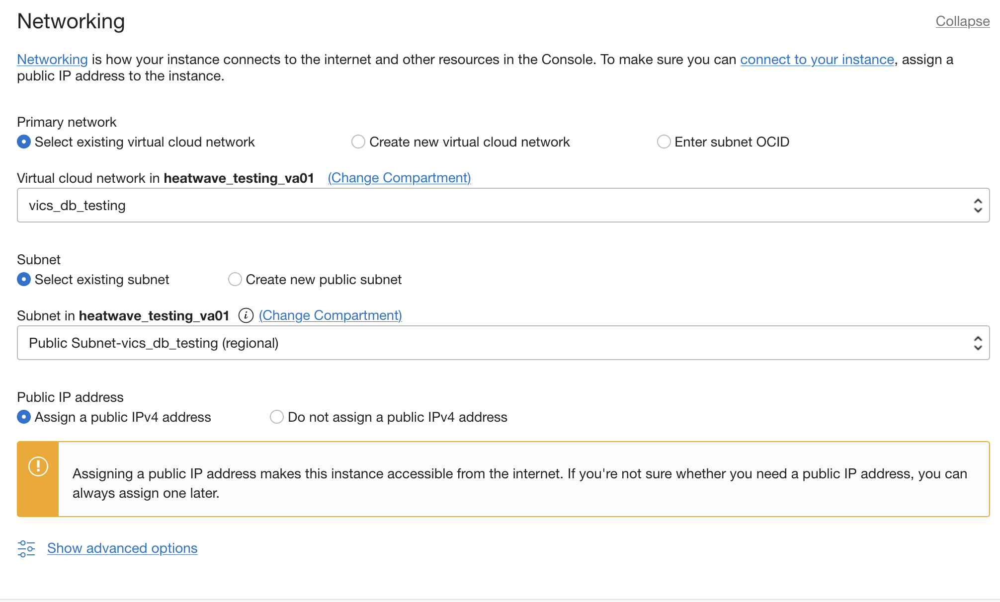
            </picture>

<h3 id="networking">Networking</h3>

<p>Scrolling down, you’ll see the <strong>Networking</strong> section. Here you’ll want to make sure to use the <a href="#create-a-vcn-and-configure-for-database-access">VCN you created previously</a>, as well as make sure you’re in the proper compartment.</p>

<h3 id="generate-ssh-keys">Generate SSH keys</h3>

<p>And of course, during this process you’ll generate SSH keys so you can access your computer instance remotely. You can do this within the Cloud Shell in OCI’s dashboard, or the SSH client of your choice.</p>

<h4 id="let-oracle-make-it-easy">Let Oracle make it easy</h4>

<p>Also, the path of least resistance for creating a key pair will be letting Oracle generate one. The key pair will allow you to log in remotely and install MySQL-shell, etc.</p>

<blockquote class="notice">
  <p><strong>NOTE:</strong> In many labs we’ll have you use the Cloud Shell, which is a convenient command line interface available directly in the OCI dashboard. I’m old school, so I’m just using Terminal on my Mac. You can use the SSH client of your choice, of course!</p>
</blockquote>

<p>For more information see:</p>

<ul>
  <li><a href="https://docs.oracle.com/en-us/iaas/developer-tutorials/tutorials/node-on-ol/01oci-ol-node-summary.htm#install-node-ol">Install Node Express on an Oracle Linux Instance</a></li>
  <li><a href="https://www.youtube.com/watch?v=LMvYOSkXF1k">A video on working with SSH keys</a>.</li>
</ul>

<h3 id="obtain-public-ip-for-compute-instance">Obtain public IP for compute instance</h3>

<p>Of course, you’ll need the public IP for your compute instance, which is found in <strong>Compute &gt; Instances &gt; Instance details</strong>. Under <strong>Instance Access</strong> you’ll find the public IP and username (opc) you’ll need to connect, with a handy <strong>copy</strong> button.</p>

<picture class="">
                <source srcset="assets/heres-public-ip-hw-oci-fy23-devrel.png 1x" />
                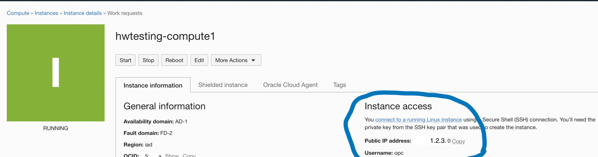
            </picture>

<p>Now, we’ll be able to <a href="https://docs.oracle.com/en-us/iaas/Content/Compute/Tasks/accessinginstance.htm">connect via SSH or the Cloud Shell</a>, and since you have a public IP, you can just ssh in to your compartment and the OCI Linux compute instance.</p>

<p>As always, keep the private key in a safe place and <code class="language-plaintext highlighter-rouge">chmod 400</code> the private key to keep it from being modified (and throwing a warning).</p>

<h3 id="provision-the-instance">Provision the Instance</h3>

<p>Go ahead and click <strong>Create</strong>.</p>

<p>It’ll take a moment for the provisioning to finish up, but when it’s done the large square icon will turn green, meaning all systems are GO!</p>

<h2 id="connect-and-install-mysql-shell">Connect and install MySQL Shell</h2>

<p>To connect, let’s use the handy Cloud Shell. It’s a little Linux terminal embedded in the OCI dashboard (and it’s adorable).</p>

<ol>
  <li>
    <p>In the upper-right corner, click the <strong>Cloud Shell</strong> prompt icon and a command line will open at the bottom of the browser.</p>

    <picture class="">
             <source srcset="assets/cloudshelliconhwtesting-devrel0622va.png 1x" />
             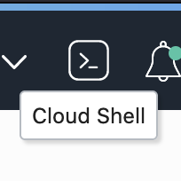
         </picture>
  </li>
  <li>
    <p>Drag and drop the previously saved private key into the cloud shell, uploading it to your home directory.</p>

    <picture class="">
             <source srcset="assets/cloudshelluploadprivkey_hwdevrel-devrel0622va.png 1x" />
             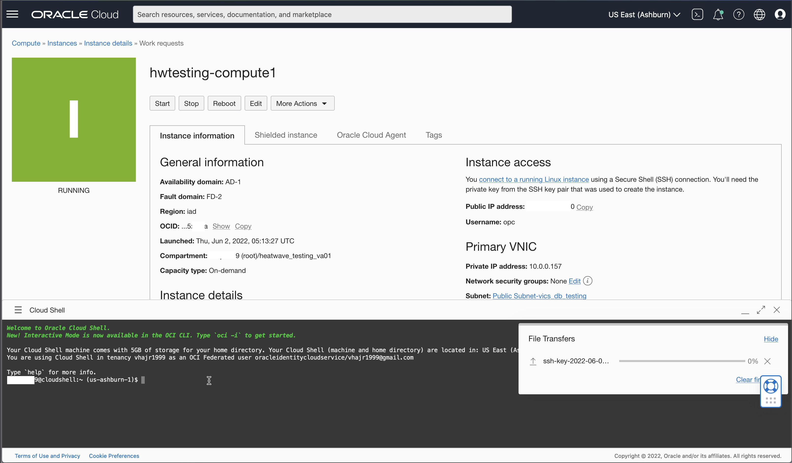
         </picture>
  </li>
  <li>
    <p>Under Instance Access, you’ll see the public IP address, and the handy <strong>Copy</strong> button. Copy the public IP.</p>
  </li>
  <li>
    <p>Now let’s ssh in, first protecting the private key file.</p>

    <div class="language-console highlighter-rouge"><div class="highlight"><pre class="highlight"><code><span class="gp">   chmod 400 &lt;private-key-filename&gt;</span>.key
</code></pre></div>    </div>
  </li>
  <li>
    <p>Then use your public IP address and username opc:</p>

    <div class="language-console highlighter-rouge"><div class="highlight"><pre class="highlight"><code><span class="gp">   ssh -i &lt;private-key-file-name&gt;</span>.key opc@&lt;compute_instance_public_ip&gt;
</code></pre></div>    </div>
  </li>
  <li>
    <p>If asked to accept the fingerprint, type <em>yes</em> and hit <strong>enter</strong>.<br />
You’ve been added to the list of known hosts, congrats. We’re in! If you see Tron, wave.</p>
  </li>
  <li>
    <p>Now we install MySQL Shell; pretty easy these days. In my case, I used SSH to log into my compute instance (don’t forget you’ll need your private key) and used yum to install what I needed.</p>

    <p>Install the MySQL Client on the compute instance using the following command:<br />
<code class="language-plaintext highlighter-rouge">sudo yum install mysql-shell</code></p>
  </li>
  <li>
    <p>Once we create our HeatWave-compatible DB System, we’ll connect to to it using the MySQL Client:<br />
<code class="language-plaintext highlighter-rouge">mysqlsh --host &lt;DBSystemEndpointIPAddress&gt; -u &lt;Username&gt; -p</code></p>
  </li>
</ol>

<p>For more information see:</p>

<ul>
  <li>
    <p><a href="https://dev.mysql.com/doc/mysql-shell/8.0/en/">Learning about MySQL Shell</a>.</p>
  </li>
  <li>
    <p><a href="https://docs.oracle.com/en-us/iaas/mysql-database/doc/connecting-db-system.html#GUID-70023ABD-5418-4C1F-975F-F3E2ABC0F93E">Learning about connecting database systems</a>.</p>
  </li>
</ul>

<h2 id="create-a-db-system">Create a DB System</h2>

<p>Remember a little while ago when we mentioned the endpoint for your DB System? Let’s set that up now.</p>

<p><strong>MENU:</strong> Menu &gt; Databases &gt; DB Systems</p>

<picture class="">
                <source srcset="assets/createdbsys_warn_devrel_0522va.png 1x" />
                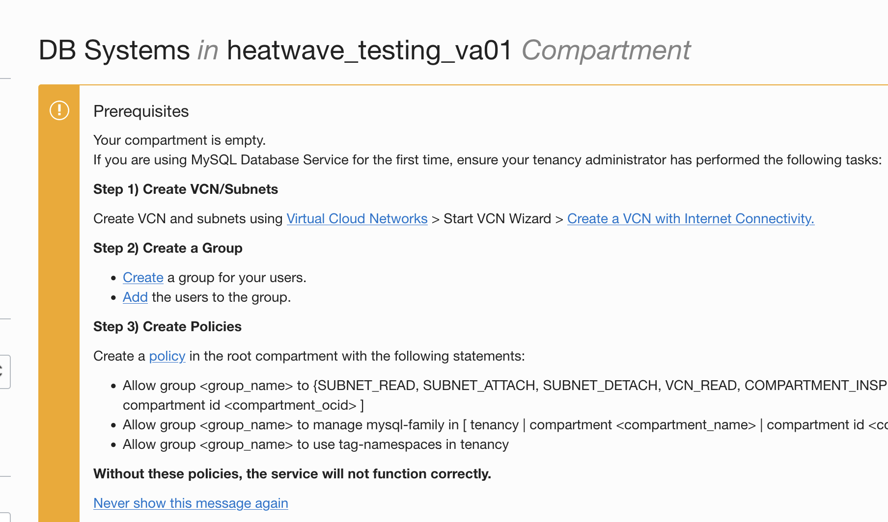
            </picture>

<blockquote class="notice">
  <p><strong>NOTE:</strong> Notice that the system warns you if you haven’t already set up users, a VCN, and so on. That’s nice.<br />
Also, don’t forget to check which compartment you’ll create this in, again under <strong>List Scope</strong> on the left.</p>
</blockquote>

<ol>
  <li>
    <p>Click <strong>Create DB System</strong>.</p>

    <p>Double-check the compartment, give it a name, and select HeatWave (of course).</p>
  </li>
  <li>
    <p>You’ll create admin credentials.<br />
Be sure to save those somewhere handy but safe!</p>
  </li>
  <li>In <strong>Configure Networking</strong>, you’ll use the compute instance created earlier, but we’ll use the private subnet. Leave the default domain.</li>
  <li>
    <p>Go to <strong>Configure Hardware</strong>.</p>

    <p>Confirm that in the <strong>Configure Hardware</strong> section, the selected shape is <code class="language-plaintext highlighter-rouge">MySQL.HeatWave.VM.Standard.E3</code>.</p>

    <p>Also, confirm that:</p>

    <ul>
      <li>CPU Core Count: 16,</li>
      <li>Memory Size: 512 GB,</li>
      <li>Data Storage Size: 1024</li>
    </ul>
  </li>
  <li>
    <p>In the <strong>Configure Backup</strong> section you may leave the default backup window of 7 days.</p>
  </li>
  <li>
    <p>Keep scrolling and click <strong>Show Advanced Options</strong>.</p>

    <ol>
      <li>
        <p>Go to the <strong>Networking</strong> tab.<br />
In the <strong>Hostname</strong> field, enter the exact name of your DB System.</p>
      </li>
      <li>
        <p>Make sure port configuration corresponds to the following:</p>

        <ul>
          <li>MySQL Port: 3306</li>
          <li>MySQL X Protocol Port: 33060</li>
        </ul>
      </li>
    </ol>
  </li>
  <li>
    <p>And… click <strong>Create</strong>!</p>

    <p>This time a yellow hexagon will appear, and eventually it’ll turn green and your DB System will be up and running. Make some tea or grab some water, you’ve done a lot.</p>
  </li>
</ol>

<h2 id="create-a-mysql-database">Create a MySQL database</h2>

<p>Now, you’ll want to create your database and import any data you need. HeatWave is really designed for big data sets needing fast analysis, so even though I’m importing the tiniest database ever, you can load up as much as you like (provided you have the storage for it). Plus, queries can be run in the cluster without offloading to a separate database. Whether you’re deploying to OCI or AWS, we got you.</p>

<p>Finally, the fun part! Import a .sql file.</p>

<h3 id="from-the-command-line">From the command line</h3>

<p>Type: <code class="language-plaintext highlighter-rouge">mysql -u username -p database_name &lt; file.sql</code></p>

<p>Where:</p>

<ul>
  <li><code class="language-plaintext highlighter-rouge">username</code> refers to your MySQL username.</li>
  <li><code class="language-plaintext highlighter-rouge">database_name</code> refers to the database you want to import.</li>
  <li><code class="language-plaintext highlighter-rouge">file.sql</code> is your file name.</li>
  <li>If you’ve assigned a password, type it now and press <strong>Enter</strong>.</li>
</ul>

<p>For more information:</p>

<ul>
  <li><a href="https://www.youtube.com/watch?v=gvcBDA2wJJ4">Here’s a video on importing using the command line</a>.</li>
</ul>

<h3 id="using-mysqldump">Using mysqldump</h3>

<p>Lots of fans of mysqldump out there, so here’s how that works (using a made-up database for magazines):</p>

<ol>
  <li>To import a .sql file with mysqldump, use the <code class="language-plaintext highlighter-rouge">mysqlimport</code> command with the following flags and syntax:
<code class="language-plaintext highlighter-rouge">$ mysqlimport -u magazine_admin -p magazines_production ~/backup/database/magazines.sql</code>
    <ul>
      <li><code class="language-plaintext highlighter-rouge">-u</code> and <code class="language-plaintext highlighter-rouge">-p</code> are needed for authentication, and is then followed by the name of the database you want to import into.</li>
      <li>You’ll need to specify the path to your SQL dump file that will contain your import data: <code class="language-plaintext highlighter-rouge">~/backup/database/magazines.sql</code></li>
      <li>You won’t need to use <code class="language-plaintext highlighter-rouge">&gt;</code> or <code class="language-plaintext highlighter-rouge">&lt;</code> for importing, but you will need them for exporting in the next guide.</li>
      <li>This will prompt a password request.</li>
    </ul>
  </li>
  <li>Your file will be automatically imported.</li>
</ol>

<p>Now that we have some data, we probably want to DO stuff with it, including visualize it in various ways. Let’s add some analytics to accomplish this – and continue our journey to the really big show, HeatWave. This is where things get really interesting, and you can see how Oracle has created a vast menu of options for your data needs.</p>

<p>The key is that you have a database running on OCI, and that database now has an endpoint which we can connect to HeatWave for analytics.</p>

<h2 id="activate-heatwave-on-aws">Activate HeatWave on AWS</h2>

<p>Remember the DB System we just created? Now we can activate MySQL HeatWave in AWS and connect our DB System to a HeatWave Cluster to run queries on!</p>

<ol>
  <li>
    <p>You’ll go to <a href="http://cloud.mysql.com/">http://cloud.mysql.com/</a>, where you’ll see the welcome page.<br />
Enter your Oracle Cloud Account name and click <strong>Continue</strong>.</p>
  </li>
  <li>
    <p>Click <strong>Enable MySQL HeatWave on AWS</strong>.<br />
This takes you to a Admin page where you will go through a brief setup process. You may have to upgrade your account to paid with a credit card, and once complete, you’ll go to the OCI Console. Try not to time this for the last minute, as provisioning may take a moment.</p>
  </li>
  <li>
    <p>From the OCI Console navigation menu, select <strong>Databases</strong>.</p>

    <p>MySQL HeatWave on AWS appears on the Home tab under the Featured label.</p>
  </li>
  <li>
    <p>Under <strong>MySQL HeatWave on AWS</strong>, click <strong>Administration</strong>, and you’ll go back to the setup.</p>
  </li>
  <li>
    <p>Now click <strong>Provision</strong> to (of course) provision MySQL on AWS. 
After the provisioning operation is completed, a message appears stating that MySQL HeatWave on AWS is ready and you are presented with options to open the MySQL HeatWave console, set up users, and view billing information.</p>
  </li>
</ol>

<h2 id="summary---so-far">Summary - so far</h2>

<p>What we’ve done so far, all on OCI, is set up a Virtual Cloud Network with ports for MySQL use, created a Bastion Compute instance, then set up a MySQL database, and now we have an endpoint for our HeatWave on AWS instance, and HeatWave should be provisioned on AWS.</p>

<p>Want to know more? Join the discussion in our <a href="https://bit.ly/devrel_slack">public Slack channel</a>!</p>


          <div class="sidebar sticky">
    <!-- <p><strong>Tags:</strong> <span class="tags">

            
            <a class="animated-link tag" href="/topics/mysql">mysql</a>
            <a class="animated-link tag" href="/topics/database">database</a>
            <a class="animated-link tag" href="/topics/heatwave">heatwave</a>
            <a class="animated-link tag" href="/topics/aws">aws</a>
            </span>
    </p> -->
  


<div itemscope itemtype="https://schema.org/Person">

  

  <div class="author__content">
    
      <h3 class="author__name" itemprop="name"></h3>
    
    
  </div>

  <div class="author__urls-wrapper">
    <ul class="author__urls social-icons">
      

      

      

      

      

      

      

      

      

      

      

      

      

      

      

      

      

      

      

      

      

      

      

      

      

      

      
    </ul>
  </div>
</div>

  
  
  

  </div>


      </section>

      <footer class="page__meta">
        
        


        

  <p class="page__date"><strong><i class="fas fa-fw fa-calendar-alt" aria-hidden="true"></i> Updated:</strong> <time datetime="2022-06-16T17:00:00+00:00">June 16, 2022</time></p>


      </footer>
    </div>

  </article>
</div>

</div>

